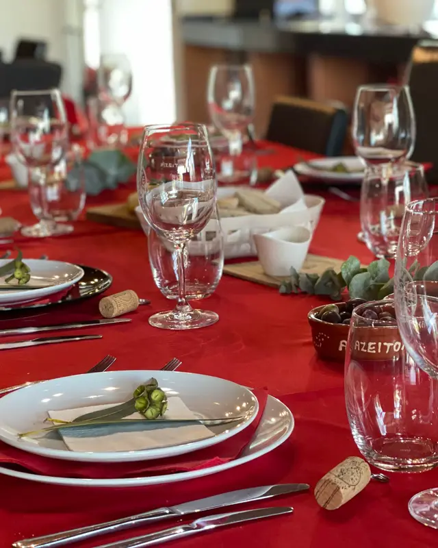

Quinta da Plansel · Alentejo
Vin. Vignes. Savoir.
Entre les mains de la famille depuis 50 ans, du cep au verre.

 Nos produits
Nos produits

Tout Plansel en un coup d'œil
Ce que vous trouvez chez Plansel.
Du vin dans le verre à la vigne dans le sol : une entreprise familiale qui accompagne les domaines depuis 50 ans.
- 01Événements du vinÉvénements au Portugal et à l'international, nouveaux chaque semaine.
- 02Acheter du vin Plansel en ligneRouge, blanc et rosé de l'Alentejo, directement du domaine.
- 03Partenaires, réseau & dégustationsBoutique en ligne B2B et B2C, partenaires en Allemagne et en Suisse, dégustations avec restaurants, hôtels et sur les salons.
- 04Académie : Enfin comprendre le vinCours WSET selon le standard de Londres, reconnus dans le monde entier, en portugais et en anglais.
- 05Séjourner & fêter à la QuintaLogements, aire pour camping-cars et espaces pour mariages, entreprises et fêtes, avec ou sans personnel.
- 06Mise en bouteille & conseilLes petits domaines mettent en bouteille chez nous et sont conseillés par trois œnologues au savoir-faire allemand et international.
- 07Machine à vendanger avec chauffeurRécolte mécanique du raisin et des olives : nous fournissons les machines avec un chauffeur expérimenté.
- 08Acheter des plants de vignePlants et clones certifiés de Viveiros Plansel.
- 09Bureau externalisé : IT, marketing, IA & serviceComptabilité, Instagram et site avec boutique pour les petits domaines. Et Plansel Technology : applications d'IA et formations pour dirigeants.
 Événements01
Événements01
Ce qui se passe cette semaine dans le vin au Portugal.
Fêtes du vin, dégustations, salons et bonnes tables. Mis à jour chaque jeudi, avec un lien direct vers l'organisateur.
Portugal
- 4–6 déc. 2026 · Vila de FradesVITIFRADES
- 16 janv. 2027 · VidigueiraGala Ville européenne du vin 2026
- 14–21 févr. 2027 · PortoWine & Travel Week
- 18–21 févr. 2027 · PortoEssência do Vinho
- fin févr. 2027 · PortoSimplesmente Vinho
- 30 avr.–2 mai 2027 · MelgaçoFesta do Alvarinho e do Fumeiro
- 29 mai 2027 · Quinta da PlanselPlansel Rosé Party
- 2–3 juil. 2027 · LamegoDouro & Porto Wine Festival
- 13–19 juil. 2027 · Ponte de LimaFesta do Vinho Verde
- mi-sept. 2027 · Peso da RéguaFesta das Vindimas do Douro
International
- févr. 2027 · ParisWine Paris
- mars 2027 · DüsseldorfProWein
- avr. 2027 · VéroneVinitaly
- printemps 2027 · Neustadt/WeinstrasseMundus Vini
- mai 2027 · LondresLondon Wine Fair
Bonnes tables
- ÉvoraRestaurante Fialho
- Vila Nova de MilfontesTasca do Celso
- LisbonneTaberna da Rua das Flores
- PortoProva
- Montemor-o-NovoWine & Dine à la Quinta da Plansel
Dates sans garantie. Vérifiez auprès de l'organisateur avant de partir.
Signaler un événement
Publicité · billboard 970 × 250 · via symplr
 Vins02
Vins02
Quinta da Plansel · Vins
Vin portugais haut de gamme. Traçable jusqu'au cep.
Dorina, œnologue formée à Geisenheim, vinifie les vignes de son père depuis 1993. Pour chaque bouteille, nous savons de quel clone elle provient.


Recommandation IA
Plansel Tinta Barroca
Le Tinta Barroca offre des fruits noirs et des tanins souples. Il tient tête à la viande et aux sauces riches.
Raison : Corsé + viande → rouge structuré
Commander en boutique
Récompensés au Mundus Vini
Dégustés à l'aveugle. Récompensés.
Nous présentons régulièrement nos vins au Mundus Vini, le concours international des éditions Meininger. Un jury international déguste à l'aveugle, sans étiquette ni nom. Chaque médaille est donc un gage de qualité indépendant pour les vins Plansel.
 Quinta da Plansel 25 Anos (1997–2022)Édition unique
Quinta da Plansel 25 Anos (1997–2022)Édition unique- DL Dorina Lindemann Tinto Reserva 20212024
- Plansel Grande Escolha 20192024
 Júlia Lindemann Limited Edition 20192024
Júlia Lindemann Limited Edition 20192024- 6× or et 5× argent2023
- Plansel Selecta Reserva Branco 20142015

Christoph & Andrea MeiningerDirection · Éditions Meininger
Mundus Vini chez Meininger Les vins Plansel Article de la Quinta
Dorina et Luísa sont en outre dégustatrices officielles du Mundus Vini.
 Partenaires, réseau & dégustations03
Partenaires, réseau & dégustations03
Partenaires, réseau & dégustations
Comment Plansel arrive jusqu'à vous.
Directement depuis notre boutique en ligne, via nos partenaires en Allemagne et en Suisse, ou dans le verre : lors de dégustations, de roadshows et de salons.
Pour qui nous sommes là

01RestaurationRestaurants, bars à vin, bars d'hôtel, beach clubs et traiteursDemander 02HôtelsCarte des vins, bar, cadeau de bienvenue et boutique de l'hôtelDemander
02HôtelsCarte des vins, bar, cadeau de bienvenue et boutique de l'hôtelDemander 03Commerce du vinCavistes, garrafeiras, épiceries fines, boutiques en ligne et duty-freeDemander
03Commerce du vinCavistes, garrafeiras, épiceries fines, boutiques en ligne et duty-freeDemander 04Grossistes et exportDistributeurs, grossistes CHR, importateurs et marques propresDemander
04Grossistes et exportDistributeurs, grossistes CHR, importateurs et marques propresDemander 05ŒnotourismeVoyagistes, circuits en Alentejo et excursions de croisièreDemander
05ŒnotourismeVoyagistes, circuits en Alentejo et excursions de croisièreDemander 06Entreprises et cadeauxCadeaux clients, réceptions et bouteilles à votre étiquetteDemander
06Entreprises et cadeauxCadeaux clients, réceptions et bouteilles à votre étiquetteDemander 07Mariages et événementsMariés, organisateurs, quintas, salons et festivalsDemander
07Mariages et événementsMariés, organisateurs, quintas, salons et festivalsDemander 08ParticuliersEn boutique et en ligne, du coffret dégustation au magnumVers la boutique
08ParticuliersEn boutique et en ligne, du coffret dégustation au magnumVers la boutique
Boutique en ligne : pour professionnels et particuliers

B2B
Pour les revendeurs, la restauration et les grands acheteurs
Commandez 24 h/24 via l'accès B2B de la boutique Plansel, à vos prix convenus à l'avance. Juste après la commande, vous recevez la confirmation par e-mail et pouvez vérifier à nouveau quantités, prix et produits. Votre commande entre immédiatement dans notre gestion des stocks.

B2C
Pour les particuliers
Choisissez vos vins dans la boutique et faites-les livrer chez vous, directement depuis le domaine en Alentejo.
Nos partenaires commerciaux
- AllemagneOrbis ViniImportateur avec son propre entrepôt pour les vins Plansel · contact : Kaiorbis-vini.de
- BavièreWolfgang BichelePartenaire commercial pour la Bavière
- CologneCaviste de la famille WittlingPropose Plansel et présente les nouveaux vins et millésimes lors de ses propres événements
- SuissePartenaire à venirLe contact sera bientôt indiqué ici
- PortugalQuinta da PlanselDirectement du domaine à Montemor-o-Novo
Vous souhaitez représenter Plansel dans votre pays ou votre région ? Devenir partenaire
Dégustations, roadshows et salons
Partenaires stratégiques : restaurants & hôtels
Depuis des années, nous organisons avec des restaurants et des hôtels des roadshows, des dégustations et des présentations de nouveaux vins. Nos partenaires offrent ainsi une expérience particulière à leurs clients et une bonne raison de les inviter au prochain événement.
Planifier un événement ensembleDégustations avec Dorina & Luísa
Réservable contre honoraires : nous venons à votre événement, dans votre hôtel ou sur votre salon, en Europe et dans le monde, aussi en dégustation-spectacle. Toutes deux sont dégustatrices officielles du Mundus Vini.
Demander une dégustationSur les salons
Plansel est présent sur les salons professionnels, à ProWein à Düsseldorf avec son propre stand. Rendez-nous visite et goûtez les nouveaux millésimes.
Rendez-vous au salonRéseau : Universidade de Évora · INIAV · WSET London · Meininger Verlag
 Académie04
Académie04

Plansel International Wine School
Enfin comprendre le vin
Cours officiels WSET selon le standard de Londres, avec la formatrice WSET Wilmy Matton, l'œnologue Dorina Lindemann et des professeurs invités. Entre pépinière, laboratoire et cave.
- WSET Level 1 · WinesInitiation pour la restauration et les amateurs1 jour
- WSET Level 2 · WinesCépages et régions du monde3 jours
- WSET Level 3 · WinesPour les futurs sommeliers5 jours
- Masterclass PortugalClones, terroir, chai. Avec les Archives Böhm2 jours
info@planselwineschool.com · +351 266 898 921
 Séjours & fêtes05
Séjours & fêtes05
Œnotourisme · Quinta da Plansel
Des expériences d'exception, à une heure de Lisbonne.
Dégustations en cave, Wine & Dine entre les vignes, séjours à la Quinta et la Plansel Gin Experience.


 Mise en bouteille & conseil06
Mise en bouteille & conseil06
Mise en bouteille & conseil
Mise en bouteille et conseil, à la Quinta da Plansel.
Les petits domaines mettent en bouteille chez nous et sont conseillés par trois œnologues au savoir-faire allemand et international.
 Machine à vendanger07
Machine à vendanger07
Machine à vendanger avec chauffeur
Machine à vendanger avec chauffeur, pour le raisin et les olives.
Récolte mécanique du raisin et des olives : nous fournissons les machines avec un chauffeur expérimenté.
 Plants de vigne08
Plants de vigne08
Viveiros Plansel
Plants de vigne certifiés de notre propre pépinière.
Depuis 1981, Viveiros Plansel greffe des vignes et des clones de cépages portugais. Environ la moitié des plants certifiés du Portugal proviennent de clones Plansel.
 Bureau externalisé09
Bureau externalisé09

Plansel Technology
Nous faisons entrer les domaines dans l'ère de l'IA.
L'IA transforme la vente, le marketing et l'administration plus vite qu'un petit domaine ne peut suivre. Nous mettons à votre service les outils d'Anthropic, de Google Gemini et d'OpenAI et vous montrons comment ils fonctionnent.
La preuve est sous vos yeux : Ce site utilise lui-même l'IA. Le sommelier recommande des vins, les Archives Böhm répondent aux questions techniques et tous les textes existent en sept langues.
Demander un conseilFormations IA sur mesure
Pour dirigeants et équipes, sur mesure : nous travaillons avec vos propres vins, clients et processus. En allemand, portugais ou anglais, à la Quinta ou chez vous.
- Écrire des prompts qui fonctionnent vraiment
- Vos propres assistants IA pour la vente et le bureau
- Protection des données et usage sûr de l'IA
Applications IA pour votre domaine
- Sommelier IA qui conseille chaque client de la boutique
- E-mails et newsletters personnalisés pour chaque client
- Un agent IA répond aux demandes et réservations 24 h/24
- Fiches vins, étiquettes et site automatiquement en 7 langues
- Posts et reels Instagram à partir de vos photos, légendés par l'IA
- Prévisions de ventes et de stock à partir de vos données
- Factures et justificatifs lus, vérifiés et pré-comptabilisés
Externalisation
Vous faites le vin, nous faisons le reste : site avec boutique, réseaux sociaux, comptabilité. Un interlocuteur, un prix mensuel fixe.
 Science10
Science10
Plansel Science · Les archives Böhm
La science derrière chaque bouteille.
Plansel signifie « Plantas Seleccionadas ». Derrière ce nom se trouve un programme de recherche mené avec des universités, qui prépare les cépages portugais au climat de demain.


« Le Portugal a besoin de sa propre recherche, pour ne pas dépendre de cépages inadaptés à son sol et à son climat. »
Comendador Jorge (Hans Jörg) Böhm, né en 1938 à Neustadt an der Weinstraße, est issu d'une famille allemande de négociants en vin. En 1961, son voilier s'échoue près de Cascais, et il tombe amoureux du Portugal. Dès 1969, l'entreprise familiale qu'il dirige est le premier importateur de vins portugais en Allemagne.
Après des études de sélection de la vigne à Geisenheim, il fonde Viveiros Plansel en 1981 et lance la première sélection clonale systématique des cépages portugais, avec l'Universidade de Évora et l'actuel INIAV. Plus de 30 projets de recherche plus tard, les clones Plansel sont reconnus en Californie, en Nouvelle-Zélande et en Australie, et une grande partie du vignoble portugais repose sur des plants Plansel, distribués par Viveiros Plansel et Vinverus.
En 2006, le président de la République portugaise l'a nommé Comendador de Mérito Agrícola.
 Prix de l'OIV 2010
Prix de l'OIV 2010
L'ouvrage de référence · Chaves Ferreira, 2007
O Grande Livro das Castas
Le grand livre des cépages du Portugal. Dirigé par le Comendador Jorge Böhm et récompensé par l'Organisation internationale de la vigne et du vin (OIV). Il décrit les cépages autochtones du pays, dont sont aussi issus les vins Plansel.
PT · OriginalDisponible
DE · ENTraduction IA, précommande
FR · ES2027
中文 · PL2027
-
 Nouveau · 2026Livro Branco das Castas VitícolasNouveaux cépages résistants aux maladies : comment le Portugal peut réduire les traitements.
Nouveau · 2026Livro Branco das Castas VitícolasNouveaux cépages résistants aux maladies : comment le Portugal peut réduire les traitements. -
 AnglaisThe Portuguese Vineyard and Wine BookHistoire, cépages, terroir, régions viticoles et accords mets-vins.
AnglaisThe Portuguese Vineyard and Wine BookHistoire, cépages, terroir, régions viticoles et accords mets-vins. -
Dinalivro · 2010D. João, Marquês de Montemor-o-NovoL'histoire derrière notre gamme de vins Marquês de Montemor.
2006Comendador de Mérito Agrícola, nommé par le président de la République
2008Meilleur technicien viticole, Revista de Vinhos
2 × OIVPrix littéraires de l'Organisation internationale de la vigne et du vin
2013Plaque d'honneur de l'Universidade de Évora
2014Médaille d'honneur de l'Academia das Ciências de Lisboa
Sélection clonale
Dans les vieilles vignes, on choisit et multiplie les ceps les plus sains et les plus expressifs.
Cépages résistants
Des vignes qui demandent moins de traitements. Pour Böhm, c'est la mission la plus importante de la filière.
Changement climatique
Du matériel végétal pour des étés plus chauds et moins d'eau, testé en Alentejo.
Cépages anciens
Des cépages portugais presque oubliés sont redécouverts et testés en vin.
Acheter plants et clones chez Viveiros Plansel
Interrogez les Archives Böhm
Prototype IAUne IA entraînée sur 50 ans de recherche Plansel répond aux questions techniques dans votre langue et cite la source dans le livre. Choisissez une question type :
Un clone est la descendance d'un seul cep particulièrement bon. Toutes les plantes d'un clone sont génétiquement identiques. Plansel cherche ces ceps dans de vieilles vignes, les évalue pendant des années sur la santé, le rendement et la qualité du vin, et ne multiplie que les meilleurs.Source : Livro Branco das Castas Vitícolas, chap. Sélection clonale (référence d'exemple)
 Wine Letter11
Wine Letter11
The Plansel Wine Letter · chaque jeudi
Cinq minutes pour enrichir votre culture du vin.
Gratuit, dans votre langue. Avec des contenus de la Wine School et des archives Böhm.
- 01Événements du vin dans le monde dans les 30 prochains jours
- 02Rendez-vous du vin au Portugal
- 03Un domaine de la semaine
- 04Restaurants avec une belle carte des vins et du Plansel
- 05Hôtels au Portugal où l'on boit du Plansel
- 06Une leçon de la Wine School
 Famille12
Famille12
La famille Böhm-Lindemann
Une famille qui vit du vin depuis des générations.
Un incident en mer est devenu l'œuvre d'une vie : trois générations ont fait des vignes, de la recherche et du chai la Quinta da Plansel.
-
Jorge BöhmFondateur, sélectionneur de vignes, Comendador
-
 DorinaŒnologue et âme du domaine
DorinaŒnologue et âme du domaine
-
 JúliaMarketing, réseaux sociaux et finances
JúliaMarketing, réseaux sociaux et finances
-
 LuísaŒnologie et ventes internationales
LuísaŒnologie et ventes internationales
- XVIIIe s.
La famille Böhm fait le commerce du vin et devient l'un des principaux importateurs de vin d'Allemagne.
- 1961
Le voilier de Jorge Böhm s'échoue dans le port de Cascais. Il reste, découvre le pays et voit le potentiel des cépages de l'Alentejo.
- 1975
Il achète ses premières terres près de Montemor-o-Novo. Elles deviennent la pépinière Viveiros Plansel.
- Années 1990
Sa fille Dorina, œnologue formée à Geisenheim, arrive au Portugal avec son mari Thomas Lindemann.
- 1993
Avec Paulo Laureano, le premier vin naît dans le chai expérimental de l'Université d'Évora. Son nom : Plansel, pour « Plantas Seleccionadas ».
- 1998
En cinq ans, Dorina et Thomas ont construit leur propre chai : la Quinta da Plansel.
- Aujourd'hui
Les filles Júlia et Luísa codirigent l'entreprise. La Quinta produit 400 000 litres par an, en cinq gammes.
- 1975Premières vignes à Montemor-o-Novo
- ~50 %des plants certifiés du Portugal issus de clones Plansel*
- 50+ans de sélection clonale de cépages portugais
- 400.000 lde vin par an à la Quinta da Plansel
- WSETInternational Wine School sur le domaine
* Chiffre de la société Plansel, cité par Vinetur, 9 nov. 2026
Source : Quinta da Plansel, « A história Lindemann-Böhm » et « A nossa equipa ».
La famille Böhm : arbre généalogique, Hans Jörg et Dorina Depuis 1975 : la pépinière Viveiros Plansel